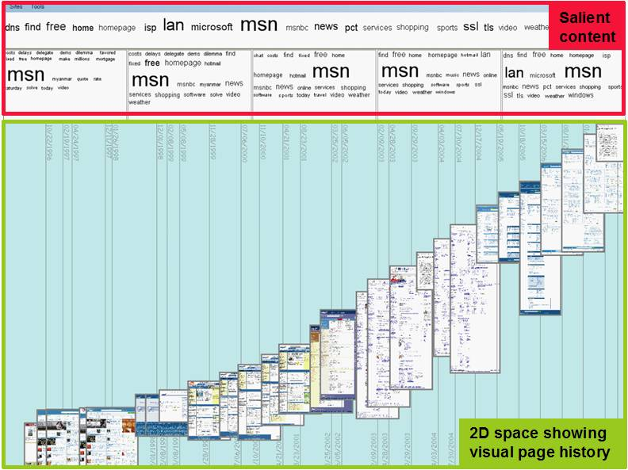
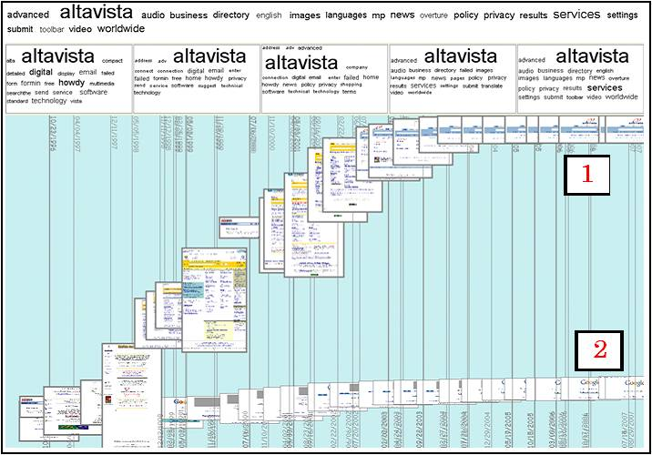
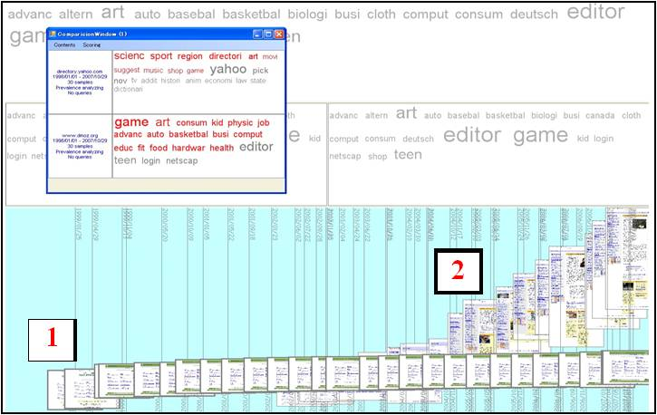
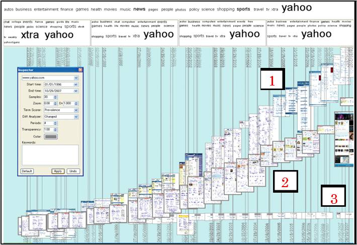

Page History Explorer (PHE) is a system for interactive exploration of page histories by summarizing and visualizing evolution and past content of Web pages. PHE portrays the overview of page evolution by displaying past page snapshots on a two dimensional plane where one dimension is time and another one is a cummulative change degree of page content over time. The system also characterizes common, frequently appearing content of pages over time by term clouds. It lets users observe page histories from different viewpoints. In addition, PHE also enables comparison of histories of multiple pages. The figures below show system snapshots.
|  |  |
| Figure 1 Example of a summary of MSN homepage history | Figure 2 Comparison of the Altavista (1) and Google (2) homepages (AltaVista page highlighted) |
|  |  |
| Figure 3 Comparison of the ODP (1) and Yahoo! Directory (2) homepages (ODP page highlighted, comparison window shown in the top-left hand-side) | Figure 4 Comparison of histories of MSN (1), Yahoo! (2) and Google (3) homepages (Yahoo! page highlighted) |
We describe a new kind of a browser for viewing histories of Web pages and for navigating the past Web. Past Web is considered here as the accumulated set of past snapshots of pages that can be retrieved from Web archives or other available Web repositories (e.g. search engines caches).
Adam Jatowt, Yukiko Kawai, and Katsumi Tanaka: Page History Explorer: Visualizing and Comparing Page Histories, IEICE Transactions on Information and Systems, Special Issue on Data Engineering (to appear) [pdf]
Adam Jatowt, Yukiko Kawai, Satoshi Nakamura, Yutaka Kidawara and Katsumi Tanaka: Journey to the Past: Proposal of a Framework for Past Web Browser, Proceedings of the 17th ACM Conference on Hypertext and Hypermedia (2006) [pdf]
Adam Jatowt, Yukiko Kawai, Satoshi Nakamura, Yutaka Kidawara and Katsumi Tanaka: Browser for Browsing the Past Web, Proceedings of the 15th International World Wide Web Conference (poster) (2006) [pdf]